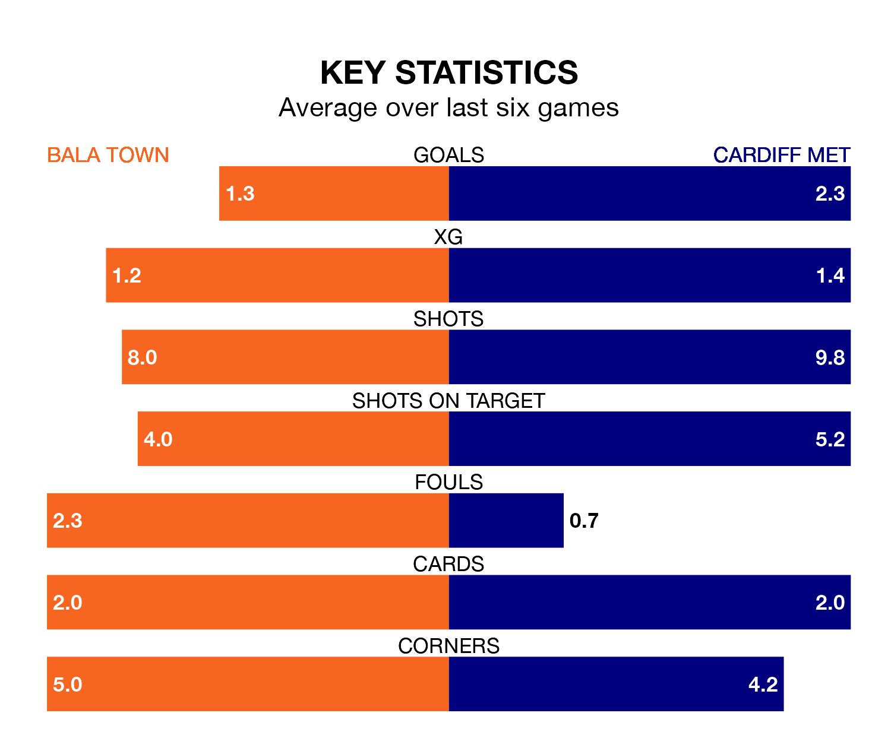

Cardiff Met travel to Bala Town on early Saturday in the Cymru Premier.
The visitors come into the game on the back of a win in their last match, having beaten Aberystwyth Town 4-2 at home, with two goals from Eliot Evans, one from Harry Owen and one from Christopher Jack Craven.
The Lakesiders also won their last match, 2-0 against Penybont, with their goals scored by Aeron Edwards and Arnaldo Paulo Fernandes Mendes.
With Kelland Absalom between the sticks, Bala can rely on one of the league's safest pair of hands. He has kept eight clean sheets in his 18 appearances this season, and no 'keeper has prevented the opposition scoring more often in the Cymru Premier.
In Cardiff's net, Alex Lang has five clean sheets in 17 games. He has conceded a goal every 64 minutes, 80% more often than the 116 minutes between goals for Absalom.
With 17 goals in 18 games so far this season, Town are the league's third-lowest scorers with 0.9 goals per game. But they are conceding fewer than average too, letting in 14 goals at a rate of 0.8 per game.
The Archers, meanwhile, are average scorers, with 1.5 goals per game. They have also conceded 1.5 goals per game.
The away side are fourth in the table after 17 games, of which they have won eight and drawn five, earning 29 points.
The Lakesiders are one place behind Cardiff in fifth, with seven wins and seven draws putting them on 28 points.
The hosts are in reasonable form in the Cymru Premier, with three wins and two draws from their last six games.
With four wins and a draw over that period, Cardiff's form is slightly better – they have taken 13 points from 18, compared to Bala's 11.
In the last five years, Bala and Cardiff have played each other on 14 occasions. Bala won three of them, Cardiff five, and they drew six times.
On average, the Lakesiders scored 0.9 goals and the Archers 0.9 in those matches.
Their last meeting was on August 19, when they played out a 0-0 draw.
